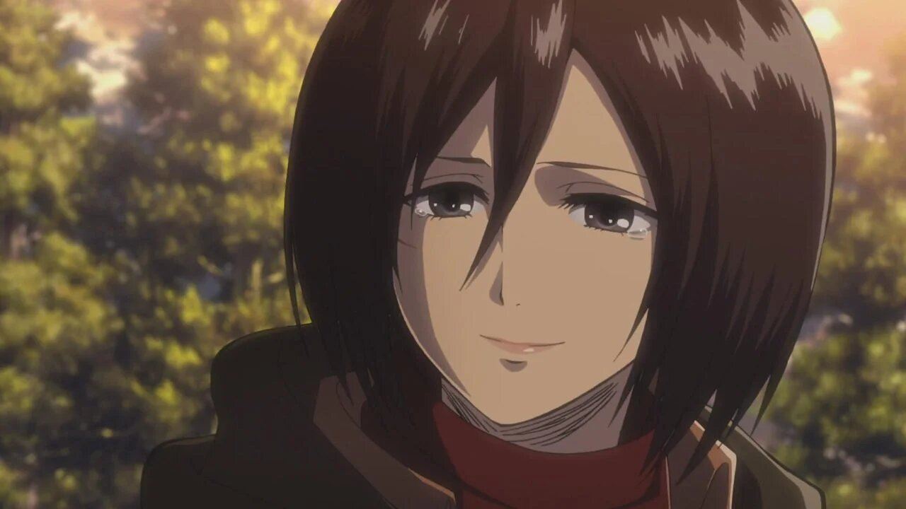

ИсторияТоп самых популярных персонажейИстория создания образа титановМангаПервый титанВооружённый силыРост титанов |
Микаса АккерманМикаса Аккерман (ミカサ・アッカーマン Микаса Акка:ман?) — приёмная сестра Эрена Йегера и лучшая подруга Армина Арлерта. Обладает выдающимися физическими способностями. После убийства её биологических родителей похитителями, она была спасена Эреном и стала жить с ним и его родителями, Гришей и Карлой до падения стены Марии. Хотя первоначально Микаса и хотела лишь мирно жить с Эреном, она последовала за ним и вступила в 104-ый кадетский корпус, где она стала лучшей из всех выпускников. Позже она вступила в Разведкорпус, чтобы следить за Эреном и защищать его.  За несколько лет до присоединения к семье Йегер, Микаса была жизнерадостным, общительным и очень проницательным ребёнком. С ранних лет своей жизни она знала о жестокости природы, ведь как-то она сказала, что хищники едят свою добычу. Однако, её жизнерадостность позволила ей отойти от этих мыслей и она продолжала счастливо жить со своими родителями. Этот идеальный мир был разрушен группой похитителей, которые убили её родителей на её глазах. Чтобы спасти себя и своего друга, Эрена Йегера, Микасе пришлось отказаться от своей прошлой личности и убить последнего похитителя. После этих событий Микаса стала цинично смотреть на всё окружающее и считать, что мир жесток и выжить в нём могут лишь сильные люди. После смерти родителей Микаса стала более эмоционально отрешённой, но она всё ещё любит своих друзей и заботится о них, особенно об Эрене и Армине, считая их своей семьёй, которую она не может позволить себе потерять. На её личность сильно повлиял Эрен, который сказал ей, что у неё не будет шанса выжить если она не будет бороться за свою жизнь. Эти слова она запомнила навсегда и она вспоминает их, когда находится на пороге смерти. Её потребность защищать Эрена повлияла на её становление как одного из сильнейших воинов человечества.
<на главную |